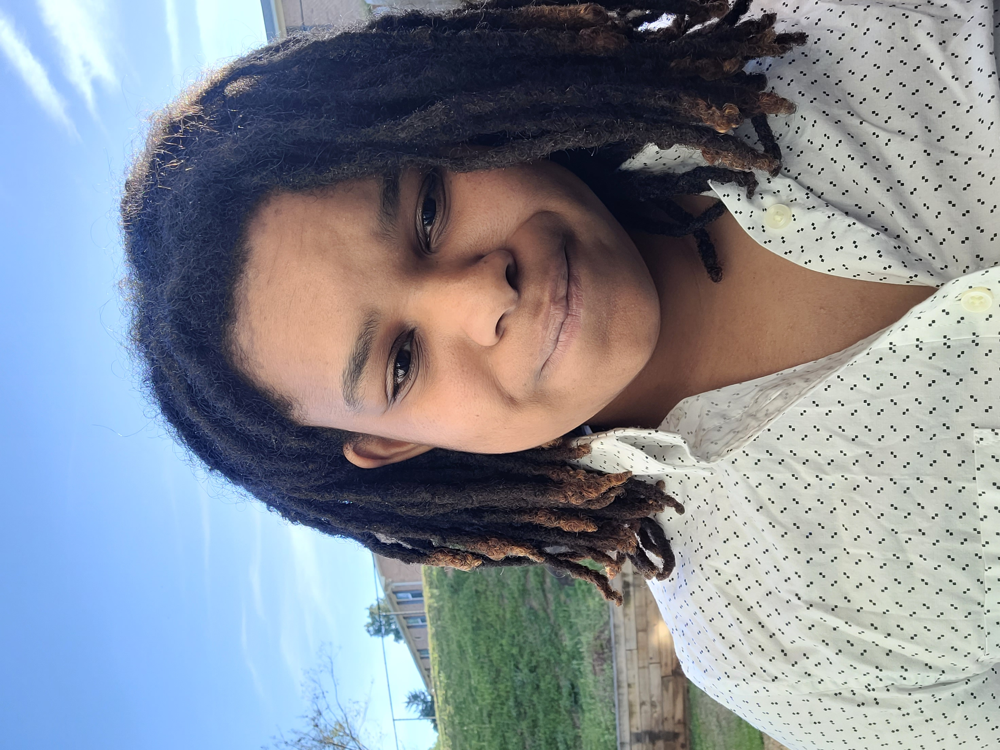

My work
A selected range of my recent projects.
Victoria
Pearl
BSc in Psychology, minor in Data Science
Currently contracted as a UX Researcher with Autodesk, my experience builds expertise in mixed method research and analysis, data analytics, and strategic insight reporting.
I have experience authoring high impact reports and research documents from my work in Market and User Research as well as my Research Fellowship in cognitive neuroscience. Additionally, I’ve implemented computational techniques to process, aggregate, and analyze data from behavioral, physiological, digital media, and financial sources. From my contract work I have gained experience owning the ongoing analysis and benchmarking of satisfaction metrics with product teams. I've helped scaffold data collection and initiated analysis for future benchmarking of consumer loyalty metrics, including company and product trust.
I have also gained considerable experience in reporting and financial analysis through my service to the non-profit organization Black In Neuro. For the past two years, I have led, authored, and currently oversee the annual report summarizing our impact for partners and sponsors of the organization as well as Black In Neuro community members. I have spearheaded the release of the nonprofit's annual report by conducting social media analytics, qualitative synthesis, geographic and attendance segmentation as well as financial reporting.
The Learning and Brain Development Lab uses cognitive, behavioral, and neuroimaging techniques to investigate changes in goal-centric, reward processing, and learning across the lifespan for children and adults. My undergraduate honors thesis work was funded by the Paul and Grace Ward Martinez (‘48) Research Fellowship. For my thesis in Psychology, I investigated the neural and cognitive effects of cannabis for persons with Schizophrenia using fMRI and behavioral data. Under the mentorship of Juliet Davidow, I carried out analysis using Python, R, and CONN tools. I collaborated with other researchers in the PENLab at Northeastern, and my research was presented at the RISE conference in Boston, MA.
For my co-op as a user experience researcher with Insulet, I was able to conduct formative and summative research with the expertise of the UX Research team dedicated to the automated insulin delivery experience for folks with Type I and Type II Diabetes. I was able to collaborate with human factors engineers to test usability of the wearable medical device using the Omnipod 5 automated insulin mobile application for delivery. During my time, I also helped establish the practice of usability metrics including ease of use, satisfaction, success rate and time on task to build product recommendations.I was supervised and mentored by Joshua Williams.
This role has been incredibly instrumental in my experience with reporting and analysis. Black In Neuro was certified as a 501c3 non-profit organization in the spring of 2022. Our mission has been to close gaps of racial diversity and inequity among STEM institutions, and empower advancement through mentoring, professional development skills, and supportive networking. Solicitation of sponsorships and donations have sustained the programming of the organization for the past three years. In 2021, my role supported communications and planning of programming initiatives including our most attended conference, BlackInNeuroWeek where we garnered the attention of thousands of attendees and millions of social media impressions. For over two years, I have led, authored, and currently oversee the annual report summarizing our impact for partners and sponsors of the organization as well as Black In Neuro community members with Danielle Nadin (Director of Finance) and Monica Javidnia (Report Co-Author/Co-Founder).
A selected range of my recent projects.